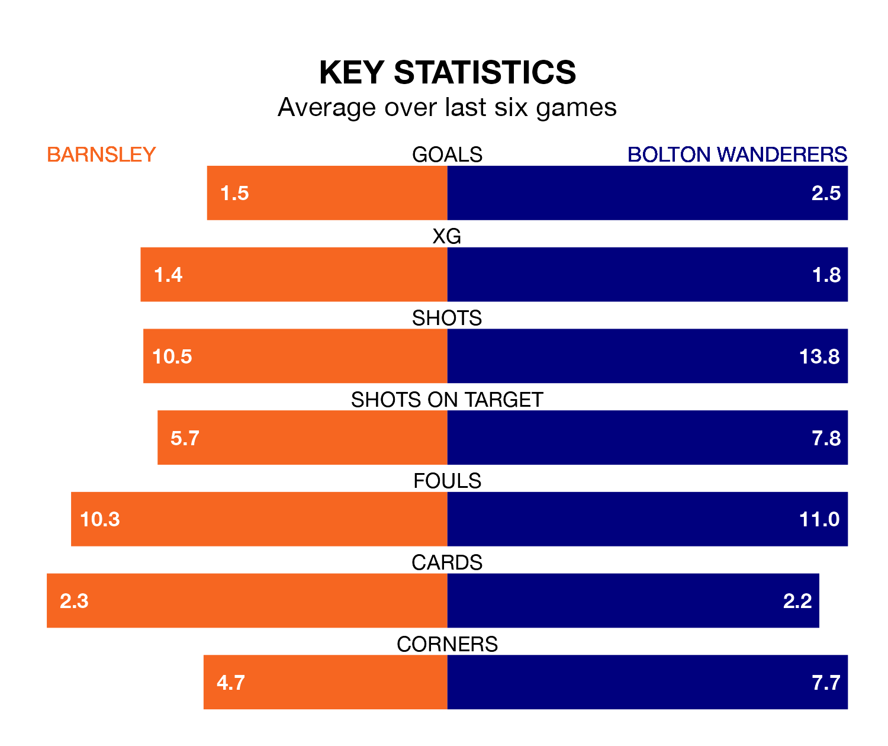

Friday's late match between Barnsley and Bolton Wanderers promises to be one for the neutrals, as two of EFL League One's most free-scoring sides go head-to-head.
Ahead of the game at Oakwell, the Tykes and Bolton sit third and second in the goal-scoring charts, with 82 and 86 goals respectively.
Striker Devante Cole leads the way for the home side, having bagged 18 goals in their 46 games to date.
And Dion Charles has been the main man in the opponents' penalty box for Bolton, with 14 goals.
Barnsley are in terrible form in EFL League One, with no wins and two draws from their last six games.
With three wins and three draws over that period, Bolton's form is much better – they have taken 12 points from 18, compared to the Tykes's two.
Wanderers are third in the table after 46 games, of which they have won 25 and drawn 12, earning 87 points.
The home team are three places behind the visitors in sixth, with 21 wins and 13 draws putting them on 76 points.
In the last 10 years, Barnsley and Bolton have played each other on 10 occasions. They won two each, and they drew six times.
On average, the Tykes scored 1.0 goal and Bolton 1.3 in those matches.
Their last meeting was on March 5, when they played out a 2-2 draw.
Bolton's Josh Sheehan is among the league's most creative players, racking up 12 assists in 43 appearances so far this season, and holding fourth spot in EFL League One's assist charts.
For Barnsley, Corey O'Keeffe and Adam Phillips have set up the most goals, having laid on six assists apiece to date.
Barnsley's last match was on Saturday, a 1-1 draw against Northampton Town, with Herbie Kane getting the goal for the Tykes.
Bolton drew 3-3 with Peterborough United last time out, also on Saturday, with Cameron Jerome, Charles and Kyle Dempsey on the scoresheet.
Friday's match will be refereed by Will Finnie, who has taken charge of 19 EFL League One games so far this season, issuing one red card and booking 60 players. He has awarded four penalties.
The last Barnsley game Finnie refereed was a 2-1 home win against Carlisle United on January 16. His last Bolton match was their 2-1 win at home against Wycombe Wanderers on February 13.
Updated: 12:00 (UTC), 02/05/24